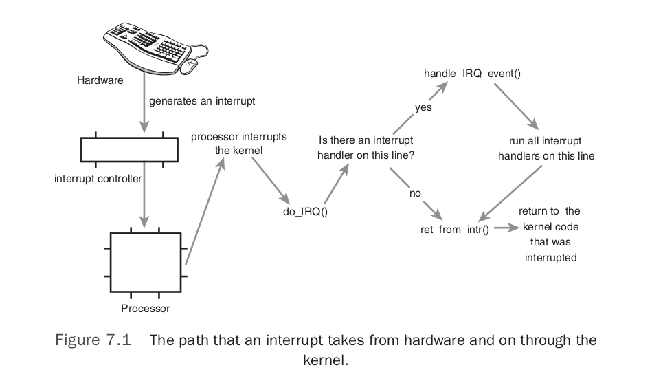

Linux Kernel Development的第7章Interrupts and Interrupt Handlers和第8章Bottom Halves and Deferring Work讲的相当清楚,关键点记录一下:
An interrupt is physically produced by electronic signals originating from hardware
devices and directed into input pins on an interrupt controller, a simple chip that multi-
plexes multiple interrupt lines into a single line to the processor. Upon receiving an inter-
rupt, the interrupt controller sends a signal to the processor.The processor detects this sig-
nal and interrupts its current execution to handle the interrupt.The processor can then
notify the operating system that an interrupt has occurred, and the operating system can
handle the interrupt appropriately.
These two goals—that an interrupt handler execute quickly and perform a large amount
of work—clearly conflict with one another. Because of these competing goals, the pro-
cessing of interrupts is split into two parts, or halves.The interrupt handler is the top half.
The top half is run immediately upon receipt of the interrupt and performs only the
work that is time-critical, such as acknowledging receipt of the interrupt or resetting the
hardware.Work that can be performed later is deferred until the bottom half.The bottom
half runs in the future, at a more convenient time, with all interrupts enabled.
Interrupt Handler Flags:
IRQF_DISABLED—When set, this flag instructs the kernel to disable all interrupts
when executing this interrupt handler.When unset, interrupt handlers run with all
interrupts except their own enabled. Most interrupt handlers do not set this flag, as
disabling all interrupts is bad form. Its use is reserved for performance-sensitive inter-
rupts that execute quickly.
When executing an interrupt handler, the kernel is in interrupt context. Recall that process
context is the mode of operation the kernel is in while it is executing on behalf of a
process—for example, executing a system call or running a kernel thread. In process con-
text, the current macro points to the associated task. Furthermore, because a process is
coupled to the kernel in process context, process context can sleep or otherwise invoke
the scheduler.
Interrupt context, on the other hand, is not associated with a process.The current
macro is not relevant (although it points to the interrupted process).Without a backing
process, interrupt context cannot sleep—how would it ever reschedule? Therefore, you
cannot call certain functions from interrupt context. If a function sleeps, you cannot use it
from your interrupt handler—this limits the functions that one can call from an interrupt
handler.

A device issues an interrupt by sending an electric signal over its bus to the interrupt
controller. If the interrupt line is enabled (they can be masked out), the interrupt con-
troller sends the interrupt to the processor. In most architectures, this is accomplished by
an electrical signal sent over a special pin to the processor. Unless interrupts are disabled in
the processor (which can also happen), the processor immediately stops what it is doing,
disables the interrupt system, and jumps to a predefined location in memory and executes
the code located there.This predefined point is set up by the kernel and is the entry point
for interrupt handlers.
注1. interrupt line enable/disable (from UnderStandingKernel)
Each IRQ line can be selectively disabled. Thus, the PIC can be programmed to dis-
able IRQs. That is, the PIC can be told to stop issuing interrupts that refer to a given
IRQ line, or to resume issuing them. Disabled interrupts are not lost; the PIC sends
them to the CPU as soon as they are enabled again. This feature is used by most
interrupt handlers, because it allows them to process IRQs of the same type serially.
注2. interrupts enabled/disabled in the processor (from UnderStandingKernel)
Selective enabling/disabling of IRQs is not the same as global masking/unmasking of
maskable interrupts. When the IF flag of the eflags register is clear, each maskable
interrupt issued by the PIC is temporarily ignored by the CPU. The cli and sti
assembly language instructions, respectively, clear and set that flag.
early_irq_init(); .config里配置了CONFIG_SPARSE_IRQ=y,所以这个函数的定义在 kernel/irq/irqdesc.c#0209
init_irq_default_affinity(); // 初始化变量 irq_default_affinity, 不清楚干什么用的
initcnt = arch_probe_nr_irqs();
CPU_VECTOR_LIMIT = 64 * NR_CPUS = 64 * 256
IO_APIC_VECTOR_LIMIT = 32 * MAX_IO_APICS = 32 * 128 = 64 * 64
NR_IRQS = NR_VECTORS + CPU_VECTOR_LIMIT = 256 + 64 * 256 = 0x4100 (和bochs view memory的结果一致)
nr_irqs = NR_VECTORS * nr_cpu_ids = 256
nr = nr_irqs_gsi + 8 * nr_cpu_ids = 40 + 8 = 48 // nr_irqs_gsi 在setup_arch里得到的是40
// .config里配置了CONFIG_PCI_MSI=y,CONFIG_HT_IRQ=y,所以
nr += nr_irqs_gsi * 16 += 40 * 16 = 48 + 640 = 688
最终 nr_irqs = 256, 不过这个函数始终返回 NR_IRQS_LEGACY = 16, 所以 initcnt = 16
// syslog里打印出 NR_IRQS:0x4100 nr_irqs:256 16
接下来一个for循环,把16个LEGACY IRQ给分配了interrupt descriptor(alloc_desc),做了简单的初始化,并用allocated_irqs记录着哪些irq已经alloc过descriptor了,然后把这个descriptor插入到radix_tree里.
arch_early_irq_init();
// legacy_pic 定义在 arch/x86/kernel/i8259.c#0392
// 这个函数做的事就是先简单的初始化下 irq_cfgx
init_IRQ();
x86_add_irq_domains(); // 空函数,不产生任何实际指令
接下来一个for循环,把vector_irq的0x30-0x3f设成0-15 // arch/x86/include/asm/irq_vectors.h 里的注释清楚的说明了256个IDT entry的分配
// System.map查一下vector_irq = 0xc760 + 0x7c00000 = 0x7c0c760
x86_init.irqs.intr_init(); => native_init_IRQ();
x86_init.irqs.pre_vector_init(); => init_ISA_irqs();
init_bsp_APIC(); // 由于smp_found_config=1,这个函数早早的就返回了
legacy_pic->init(0); => init_8259A(0);
// @see http://wiki.osdev.org/8259_PIC
// @see 8259A PROGRAMMABLE INTERRUPT CONTROLLER
// 就是做好8259A的初始化工作,让它可以开始工作
for (legacy irqs)
irq_set_chip_and_handler_name(i, chip = i8259A_chip, handle_level_irq, name = i8259A_chip->name = "XT-PIC")
// early_irq_init()时,我们给LEGACY IRQS alloc了desc并做了简单的初始化,这里把它们对应的desc.irq_data.chip,handler,name都设上
// 要想查看这些desc,得先了解radix_tree,然后遍历下,就知道了
apic_intr_init();
smp_intr_init();
alloc_intr_gate(RESCHEDULE_VECTOR, reschedule_interrupt);
// 在 trap_init 里我们已经知道,系统使用used_vectors标记哪些vector已经使用了,这里就是把RESCHEDULE_VECTOR=0xfd在used_vectors里标记一下
// 并且 set_intr_gate(0xfd, reschedule_interrupt => smp_reschedule_interrupt)
NUM_INVALIDATE_TLB_VECTORS = 32
INVALIDATE_TLB_VECTOR_START = 0xee - 32 + 1 = 207
alloc_intr_gate(207+31=238, invalidate_interrupt31 => smp_invalidate_interrupt)
alloc_intr_gate(207+30=237, smp_invalidate_interrupt)
...
alloc_intr_gate(207+0=207, smp_invalidate_interrupt)
alloc_intr_gate(CALL_FUNCTION_VECTOR, call_function_interrupt);
alloc_intr_gate(CALL_FUNCTION_SINGLE_VECTOR, call_function_single_interrupt);
set_intr_gate(IRQ_MOVE_CLEANUP_VECTOR, irq_move_cleanup_interrupt);
set_bit(IRQ_MOVE_CLEANUP_VECTOR, used_vectors);
alloc_intr_gate(REBOOT_VECTOR, reboot_interrupt);
alloc_intr_gate(THERMAL_APIC_VECTOR, thermal_interrupt);
alloc_intr_gate(THRESHOLD_APIC_VECTOR, threshold_interrupt);
alloc_intr_gate(LOCAL_TIMER_VECTOR, apic_timer_interrupt);
alloc_intr_gate(X86_PLATFORM_IPI_VECTOR, x86_platform_ipi);
alloc_intr_gate(SPURIOUS_APIC_VECTOR, spurious_interrupt);
alloc_intr_gate(ERROR_APIC_VECTOR, error_interrupt);
alloc_intr_gate(IRQ_WORK_VECTOR, irq_work_interrupt);
for (i = FIRST_EXTERNAL_VECTOR; i < NR_VECTORS; i++) {
if (!test_bit(i, used_vectors))
set_intr_gate(i, interrupt[i-FIRST_EXTERNAL_VECTOR]);
}
总结下x86_init.irqs.intr_init()也就是native_init_IRQ()做的事:
它初始化好8259A PIC(legacy pic),每一个legacy irq都有一个对应的irq_desc,在这里给每一个irq的desc都设好
irq_desc.irq_data.chip = i8259A_chip,
irq_desc.handle_irq = handle_level_irq,
irq_desc.name = "XT-PIC"
apic_intr_init其实就是设了一堆的intr_gate, 所有设过的vector都会在used_vectors里记下,需要注意的是 legacy irqs 并没有设gate
最后遍历一下used_vectors,没设gate的vector都设成interrupt, interrupt的定义在 arch/x86/kernel/entry_64.S#0748, 最终调用的是 common_interrupt
// 当真的有interrupt发生时,通过IDT找到对应的处理函数,对interrupt来说,实际调用的是common_interrupt,而common_interrupt会去调用do_IRQ,do_IRQ根据irq找到desc,进而调用irq_desc.handle_irq指向的函数去处理中断
prio_tree_init();
init_timers();
timer_cpu_notify(&timers_nb, CPU_UP_PREPARE, smp_processor_id());
init_timers_cpu(cpu); // 初始化了boot_tvec_bases,但不知道有什么用
init_timer_stats(); // 初始化每个cpu上的tstats_lookup_lock
register_cpu_notifier(&timers_nb); // 就是把timers_nb加到cpu_chain里
/* cpu_chain 0x1c2c7e0
perf_cpu_notify_nb.31826 <-- perf_event_init()
perf_cpu_notify_nb.31826 <-- page_alloc_init()
slab_notifier <-- kmem_cache_init()
rcu_cpu_notify_nb.19595 <-- rcu_init()
radix_tree_callback_nb.13777 <-- radix_tree_init()
timers_nb <-- init_timers()
*/
open_softirq(TIMER_SOFTIRQ, run_timer_softirq);
/* Linux Kernel Development里讲的比较清楚
softirq是固定的,当前有9个 @see include/linux/interrupt.h#0406
一个softirq其实就是个function, 当前softirq的情况如下
softirq_vec[NR_SOFTIRQS] = {
HI_SOFTIRQ, // NULL
TIMER_SOFTIRQ, // run_timer_softirq
NET_TX_SOFTIRQ, // NULL
NET_RX_SOFTIRQ, // NULL
BLOCK_SOFTIRQ, // NULL
BLOCK_IOPOLL_SOFTIRQ, // NULL
TASKLET_SOFTIRQ, // NULL
SCHED_SOFTIRQ, // run_rebalance_domains, @see sched_init()
HRTIMER_SOFTIRQ, // NULL
RCU_SOFTIRQ, // rcu_process_callbacks, @see rcu_init()
}
*/
hrtimers_init(); 这个函数和init_timers非常类似
hrtimer_cpu_notify(&hrtimers_nb, CPU_UP_PREPARE, smp_processor_id());
init_hrtimes_cpu(scpu);
register_cpu_notifier(&hrtimers_nb);
/* cpu_chain 0x1c2c7e0
perf_cpu_notify_nb.31826 <-- perf_event_init()
perf_cpu_notify_nb.31826 <-- page_alloc_init()
slab_notifier <-- kmem_cache_init()
rcu_cpu_notify_nb.19595 <-- rcu_init()
radix_tree_callback_nb.13777 <-- radix_tree_init()
timers_nb <-- init_timers()
hrtimers_nb
*/
open_softirq(HRTIMER_SOFTIRQ, run_hrtimer_softirq);
/* softirq_vec[NR_SOFTIRQS] = {
HI_SOFTIRQ, // NULL
TIMER_SOFTIRQ, // run_timer_softirq
NET_TX_SOFTIRQ, // NULL
NET_RX_SOFTIRQ, // NULL
BLOCK_SOFTIRQ, // NULL
BLOCK_IOPOLL_SOFTIRQ, // NULL
TASKLET_SOFTIRQ, // NULL
SCHED_SOFTIRQ, // run_rebalance_domains, @see sched_init()
HRTIMER_SOFTIRQ, // run_hrtimer_softirq
RCU_SOFTIRQ, // rcu_process_callbacks, @see rcu_init()
}
*/
softirq_init();
register_hotcpu_notifier(&remote_softirq_cpu_notifier);
open_softirq(TASKLET_SOFTIRQ, tasklet_action);
open_softirq(HI_SOFTIRQ, tasklet_hi_action);
// tasklet其实就是把一堆的function用链接串起来,然后用tasklet_action一个接一个的调用. Linux Kernel Development里讲的和代码非常吻合.
// 让人不太明白的就是这个softirq_work_list,待后边弄清楚了softirq在不同cpu上的调度执行,会清楚一些吧
/* cpu_chain 0x1c2c7e0
perf_cpu_notify_nb.31826 <-- perf_event_init()
perf_cpu_notify_nb.31826 <-- page_alloc_init()
slab_notifier <-- kmem_cache_init()
rcu_cpu_notify_nb.19595 <-- rcu_init()
radix_tree_callback_nb.13777 <-- radix_tree_init()
timers_nb <-- init_timers()
hrtimers_nb <-- hrtimers_init()
remote_softirq_cpu_notifier <-- softirq_init
softirq_vec[NR_SOFTIRQS] = {
HI_SOFTIRQ, // tasklet_hi_action, @see softirq_init()
TIMER_SOFTIRQ, // run_timer_softirq, @see init_timers()
NET_TX_SOFTIRQ, // NULL
NET_RX_SOFTIRQ, // NULL
BLOCK_SOFTIRQ, // NULL
BLOCK_IOPOLL_SOFTIRQ, // NULL
TASKLET_SOFTIRQ, // tasklet_action, @see softirq_init()
SCHED_SOFTIRQ, // run_rebalance_domains, @see sched_init()
HRTIMER_SOFTIRQ, // run_hrtimer_softirq, @see hrtimers_init()
RCU_SOFTIRQ, // rcu_process_callbacks, @see rcu_init()
}
*/
timekeeping_init();
read_persistent_clock(&now);
// @see http://wiki.osdev.org/CMOS, 从CMOS RTC里读取出当前时间
read_boot_clock(&boot);
// x86-64不支持read_boot_clock,所以这个函数就是kernel/time/timekeeping.c#0553, boot.tv_sec=0,tv_nsec=0
write_seqlock_irqsave(&xtime_lock, flags); // xtime_lock.sequence++;
ntp_init();
/*
kernel可以有很多clock, 比如我们熟悉的 CLOCK_REALTIME, CLOCK_MONOTONIC, 还有一些不熟悉的如CLOCK_REALTIME_COARSE @see include/linux/time.h#0286
当前最多支持MAX_CLOCKS=16个clock
基础的clock有三个, HRTIMER_BASE_REALTIME, HRTIMER_BASE_MONOTONIC, HRTIMER_BASE_BOOTTIME, 用struct hrtimer_clock_base表示
应该是每个cpu可以支持不同的clock,用struct hrtimer_cpu_base表示,这个struct里有一个clock_base[HRTIMER_MAX_CLOCK_BASES=3]数组表示当前cpu支持的base clock
定义一个percpu变量 struct hrtimer_cpu_base hrtimer_bases 来管理每个cpu上的clock, 默认就是上边三个clock,它们用于获取当前时间的函数分别是:
ktime_get_real, ktime_get, ktime_get_boottime
在平时使用的时候,我们只需要指明clock_id即可,有一个lookup table(其实就是个数组 hrtimer_clock_to_base_table)把clock_id转成base clock
当定义一个timer(struct hrtimer)时,比如这里的ntp的timer叫leap_timer,除了指明timer的过期时间和callabck function外,还需要记下把这个timer的clock base
*/
hrtimer_init(&leap_timer, CLOCK_REALTIME, HRTIMER_MODE_ABS);
leap_timer.function = ntp_leap_second;
// hrtimer_init的第二个参数指明了clock_id,在初始化过程中,根据clock_id找到clock base index,然后再从cpu_base里就找到clock base
clock = clocksource_default_clock(); // clocksource_jiffies.enable = NULL
timekeeper_setup_internals(clock); // 初始化timekeeper,还不清楚有什么用
xtime = now;
raw_time = 0;
boot = xtime;
set_normalized_timespec(&wall_to_monotonic, -boot.tv_sec, -boot.tv_nsec); // 不太清楚这个有什么用
/*
xtime 记录着当前的日期时间 wall_time, 当kernel处理PIT的interrupt时,会更新xtime, ktime_get_real()用于获取当前时间,它把xtime加上jiffies换算成的nsec就得到了精确的时间
不过看 Kernel Development 里说的, xtime和jiffies是一起在timer interrupt handler里更新的,所以后边 timekeeping_get_ns 没什么用吧???
*/
total_sleep_time = 0;
write_sequnlock_irqrestore(&xtime_lock, flags);
time_init(); late_time_init = x86_late_time_init;
profile_init(); prof_on = 0, 这个函数早早的就返回了,什么也没做.
early_boot_irqs_disabled = false; local_irq_enable(); => sti 当前cpu开始处理外部中断.
是时候再来一次总结了:
GRUB把kernel加载进内存并跳到kernel代码里开始执行时,就执行了指令cli屏蔽了中断.
现在page allocator, slab allocator, percpu allocator, scheduler, IDT, softirq, tasklet, wall_time都已经ready了.
不过注意 system timer (PIT) 还没有好, 所以现在虽然执行了指令sti解除了中断屏蔽, 但应该还不会有很多中断需要处理.